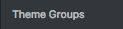
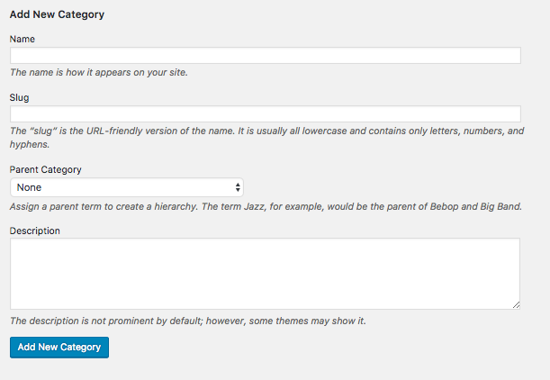
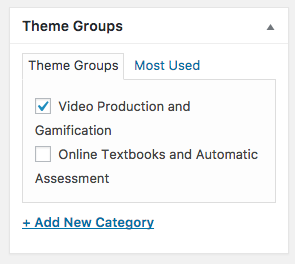
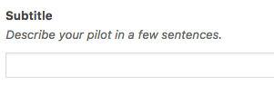
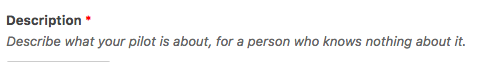
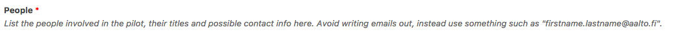
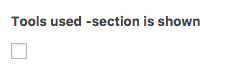

Description
The pilots page gathers all the pilots in their respective Theme Groups.
How do I add a Theme Group?
A Theme Group is added from 
-> . -> Add New Category:

Keywords: Adding a theme group, new theme group
How do I put a pilot in a theme group?
When you edit a pilot page or create a new pilot page, you can see a Theme Groups box on the right side of the editing box. Select a theme from there:

Be wary, however: pilots can have multiple themes. If you want to change a theme, remember to uncheck the other one.
Keywords: change theme, changing theme, put pilot to theme, pilot in theme
Adding a new pilot
You can add a new pilot as explained in General. When adding a new pilot, there are some things that you need to include and some that are optional.
Subtitle

The subtitle will be shown below the pilot title. It is not required but it is good for making the reader interested to read more about the pilot.
Description

People

Tools used, Links & materials, Reflection
Section is shown 
This setting decides whether the section in question is shown on this pilot page.
Tools used / Links & materials / Reflection The content for the corresponding section.